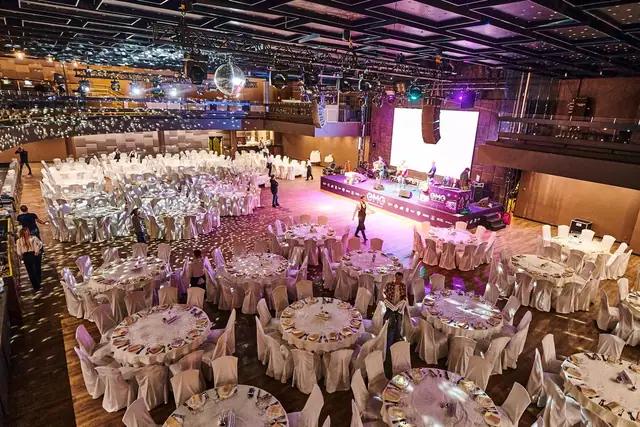
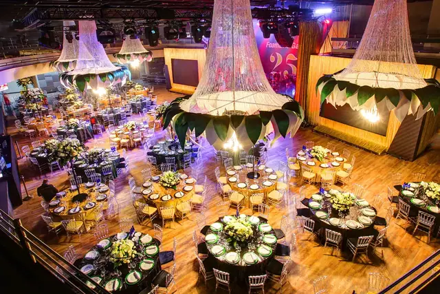

Зал · Проспект Мира
Согласие Hall


Зал · Цветной бульвар
Omega Rooftop


Концертный зал · Новый Арбат
ARBAT21
Цены
Сколько стоит площадка на 100 гостей
| Площадка | Гостей | Банкет, на гостя | На 100 гостей |
|---|---|---|---|
| Согласие HallПроспект Мира | до 200 | по меню | под запрос |
| Omega RooftopЦветной бульвар | до 220 | от 9 000 ₽ | ≈ 1 600 000 ₽ |
| ARBAT21Новый Арбат | до 1200 | от 8 000 ₽ | ≈ 1 400 000 ₽ |
Банкет по меню площадки + сервисный сбор + аренда и добор до депозита в самый выгодный день. Без декора, ведущего и подрядчиков — их добавьте в калькуляторе на странице площадки. Цены площадок на 2026–2027 год, на вашу дату уточним.